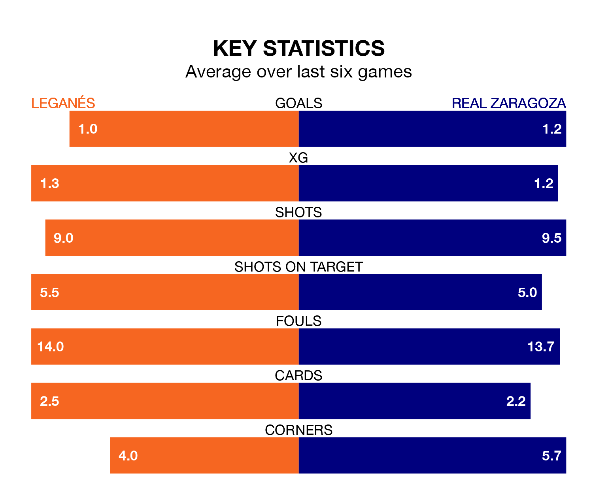

Leganés face Real Zaragoza on Saturday seeking to protect their long unbeaten run in the Segunda División.
Leganés are unbeaten in seven, with three wins and four draws, ahead of the 3.15pm kick-off.
They face a Zaragoza team who have won two and drawn two over the same number of games.
Leganés are top of the table after 36 games, of which they have won 17 and drawn 12, earning 63 points.
Zaragoza are 12 places behind the home team in 13th, with 11 wins and 12 draws putting them on 45 points.
With 47 goals in 36 games so far this season, Leganés are scoring more than average in the league with 1.3 goals per game. And they are conceding fewer than average, letting in 21 goals at a rate of 0.6 per game.
The visitors, meanwhile, are below average scorers, with 1.0 goal per game, compared to a league average of 1.1. They have conceded 0.9 goals per game.
With Diego Conde between the sticks, Leganés can rely on one of the league's safest pair of hands. He has kept 18 clean sheets in his 34 appearances this season, and no 'keeper has prevented the opposition scoring more often in the Segunda División.
In Zaragoza's net, Cristian Darío Álvarez has five clean sheets in 10 games. He has conceded a goal every 146 minutes, 10% more often than the 157 minutes between goals for Conde Alcolado.
In the last 10 years, Leganés and Zaragoza have played each other on 11 occasions. Leganés won five of them, Zaragoza four, and they drew twice.
On average, Leganés scored 1.4 goals and Zaragoza 1.1 in those matches.
Their last meeting was on December 2, when Zaragoza won 1-0 at home.
Leganés's last match was on April 19, a 0-0 draw against CD Tenerife.
Zaragoza beat SD Huesca 2-1 last time out, on Saturday, with Adrian Liso Lahoz and Maikel Mesa Piñero on the scoresheet.
Updated: 07:59 (UTC), 26/04/24